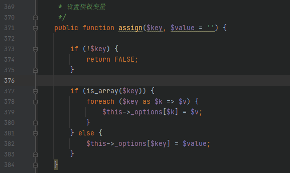
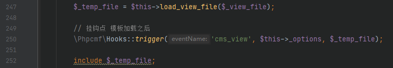
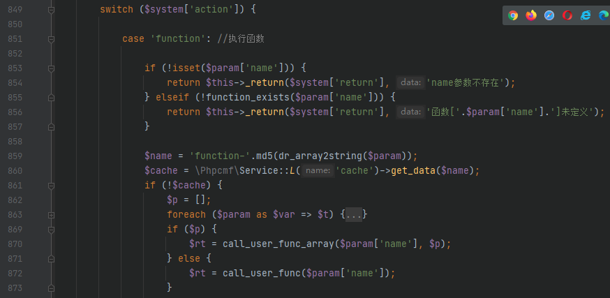
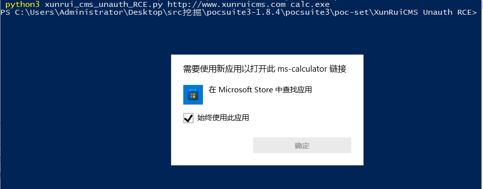

漏洞分析: XunRuiCMS_变量覆盖导致的前台RCE
本文仅用于技术讨论与研究，文中的实现方法切勿应用在任何违法场景。如因涉嫌违法造成的一切不良影响，本文作者概不负责。
0x00 漏洞简介
先后在两篇文章中看到了这个cms，利用方式感觉很有意思，遂跟着复现一波写下了这篇文章。
0x01 影响范围
影响在此修复之前的版本
https://gitee.com/dayrui/xunruicms/commit/80e2d8f3008384d926c64163b7334a260edc0a51
此处测试环境为修复的前一个版本，可 git 下载后执行命令
1 | |
0x02 漏洞分析
我们可以根据修复记录来复现漏洞
变量覆盖
首先定位到 dayrui/Fcms/Core/View.php的display方法，218 行存在一个 extract函数
1 | |
第二个参数为 EXTR_OVERWRITE，也就是可以覆盖已存在的变量，那么只要 $this->_options可控，我们就可以得到一个变量覆盖漏洞，因此寻找赋值的位置
同样在该文件

从注释可以看到这个方法是用来设置模板变量的，这里将传入的第一个参数全部放入了 $this->_optionsdayrui/Fcms/Control/Api/Api.php中的 template方法使用 assign来设置模板变量，并且参数可以通过 GET得到，因此可控，间接导致了 $this->_options可控，之后又进入 display方法，触发 extract，因此存在变量覆盖漏洞

现在继续跟进 display方法

由于存在变量覆盖漏洞，因此 $phpcmf_name和 $phpcmf_dir都可控，之后进入 get_file_name方法，两个参数都可控，这个方法就不跟进看了，最后得到的 $_view_file可控，继续往下走

load_view_file方法会根据 $_view_file生成一个 cache file并返回文件路径，最后包含该文件
命令执行
现在我们需要找到一处可以命令执行的地方，而 View.php中有一个 list_tag方法

这里存在一个 switch ... case ...当 $system['action']为 function时就可以进入上面的分支，从而有机会被执行
在变量覆盖块，我们讲到了可以包含模板文件，我们可以选择 dayrui/Fcms/View/api_related.html
生成 cache文件后包含，在被包含的文件中，我们可以找到
1 | |
因此可以调用到 list_tag方法，并且可以用变量覆盖来控制参数，接下来我们进入 list_tag

$params就是传进来的参数，也就是上面那一大串，部分为我们所控
这里使用 explode，按空格分割并写入数组，之后取出数组每一项用 =分割，分别得到 $var和 $val，最后如果存在 $system[$var]，就会用处理过的$val覆盖
因此我们可以利用可控的变量来覆盖 $system['action']从而进入 function分支，到后面就比较简单了，这里不多赘述。
0x03 漏洞复现
因为调用 display的地方使用了 ob_start，因此一般的命令都没有回显，所以使用的弹计算器的方式
自己弹了一下自己，只是我的计算器早就被我删了

0x04 总结
利用方式很有意思，但是有一点点复杂，有兴趣的话可以自己手调一下，会有更多的收获的，若是有什么疑问的地方，欢迎私聊交流讨论。